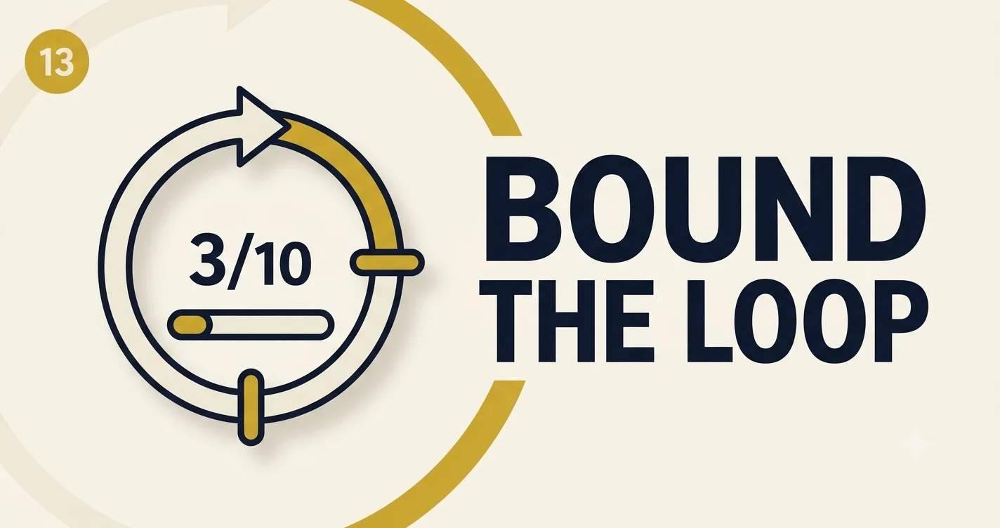

Agentic Workflows and Multi-step Planning
An agent is not magic autonomy—it is a loop: plan, act, observe, repeat until done or until you hit a guardrail. Most production incidents are trace problems, not "reasoning" problems.
A finance bot issued a refund twice because step seven retried a succeeded tool call. The planner was fine; idempotency keys were missing. That taught me to design agent UX for operators: every run should read like a flight recorder.
"Agentic" has become a catch-all for anything with more than one LLM call. In production I distinguish orchestrated workflows (deterministic graph with LLM nodes) from autonomous agents (model picks tools until done). The latter is powerful and harder to debug—default to orchestration unless ambiguity is the product requirement.
stateDiagram-v2
[*] --> Plan
Plan --> Act: tool selected
Act --> Observe: tool result
Observe --> Plan: not done
Observe --> [*]: goal met
Observe --> Halt: guardrail
Agent Trace Player
Step through a recorded trace. Watch state accumulate—and where loops should have stopped.
Orchestration patterns
ReAct loop
Think → tool → observe. Flexible; needs step caps and strong observations.
Planner / worker
Planner emits DAG; workers execute. Easier to test; less adaptive mid-flight.
Supervisor routing
Router picks specialist agent per turn. Good for multi-domain copilots.
Deterministic + LLM nodes
Code owns branching; LLM only for language tasks. Best for regulated flows.
| Style | Debuggability | Adaptability | When to use |
|---|---|---|---|
| Fixed workflow | High | Low | Compliance, refunds, onboarding |
| ReAct agent | Medium | High | Research, ops triage, evolving tools |
| Hybrid | High | Medium | Locked steps + LLM only where needed |
Planning patterns that ship
- Explicit goal object: JSON state the planner updates—not vibes in chat history.
- Max steps + max tool spend: Hard caps prevent runaway loops and invoice shock.
- Tool allowlists per intent: Router picks 3–8 tools, not eighty.
- Human checkpoint: Pause before irreversible writes (refunds, deletes, external email).
Anti-patterns from postmortems
Idempotency and side effects
Every write tool needs an idempotency key derived from run_id + step + tool + canonical_args.
Retries must not double-charge. Store tool receipts in state so replay skips succeeded writes.
def execute_tool(tool, args, run_id, step):
key = hashlib.sha256(f"{run_id}:{step}:{tool}:{json.dumps(args,sort_keys=True)}".encode()).hexdigest()
if store.has_succeeded(key):
return store.get_receipt(key)
result = tool.invoke(args, idempotency_key=key)
store.save_receipt(key, result)
return resultObservation schema (non-negotiable)
Tool results should land in structured JSON the planner consumes—not prose blobs.
{
"ok": true,
"tool": "get_policy",
"data": { "eligible": true, "max_refund": 240 },
"error": null,
"retriable": false,
"latency_ms": 142
}for step in range(MAX_STEPS):
plan = llm.plan(goal=state.goal, observations=state.observations, tools=allowed_tools)
if plan.action == "finish":
return plan.answer
if plan.action == "escalate":
return human_queue(state)
result = execute_tool(plan.tool, plan.args, idempotency_key=state.run_id)
state.observations.append({"step": step, "tool": plan.tool, "result": result})
if result.error and not result.retriable:
breakTesting agents without chaos
- Record traces from prod (redacted) and replay in CI with mocked tools.
- Assert final state object, not exact natural language.
- Inject fault tool responses (timeout, 409 conflict) and expect escalate/halt.
Your implementation challenge
Export one prod trace with >4 steps. Mark which steps were redundant. Remove one tool call via routing or caching and measure token delta on replay. That is your agent cost roadmap.